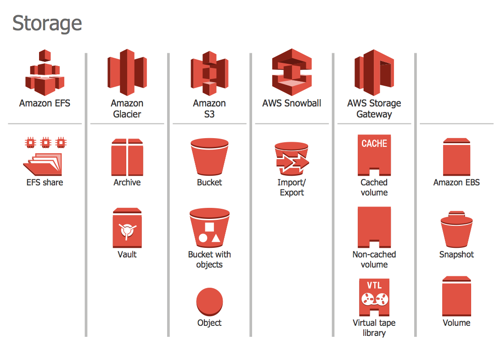
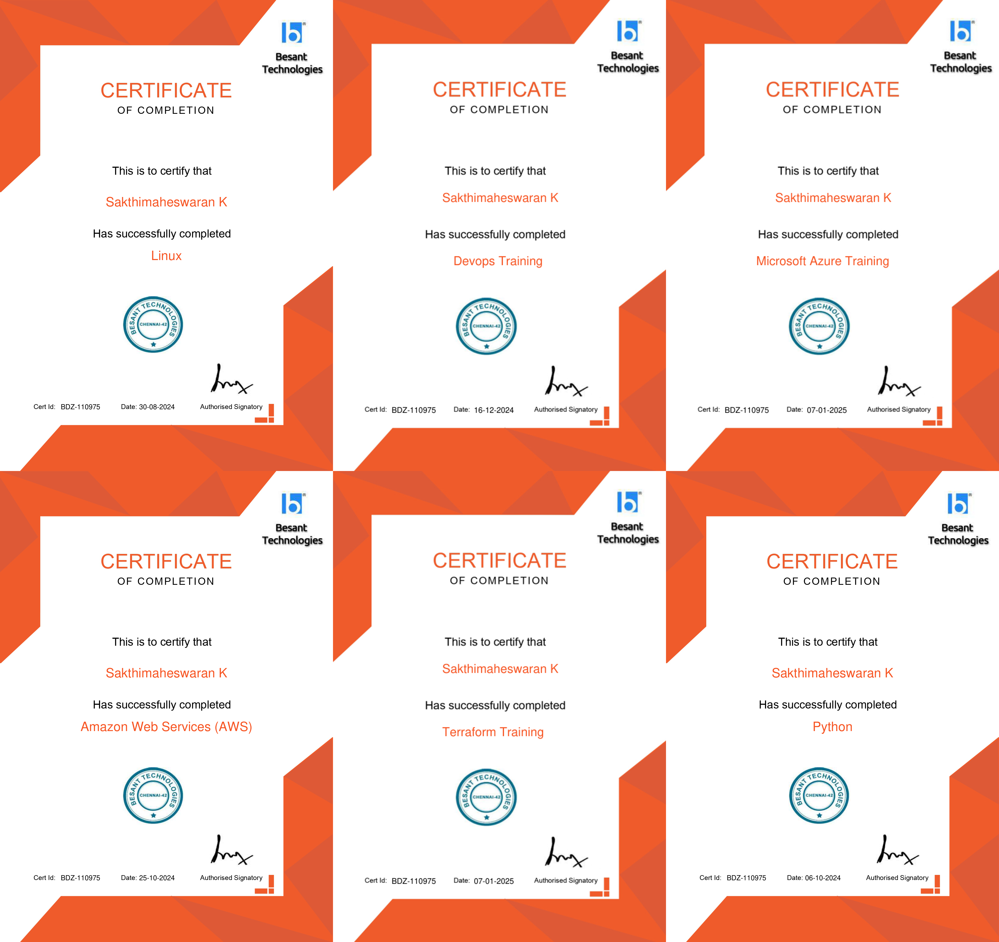
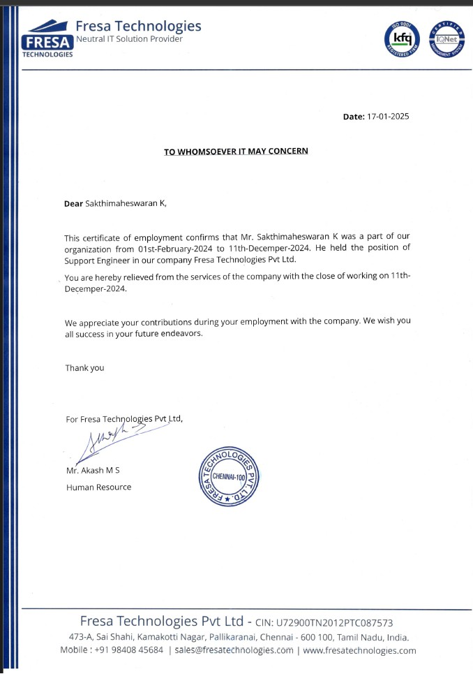

2025
Certified AWS and DevOps professional with expertise in cloud computing, automation, and infrastructure management. Skilled in designing and implementing scalable cloud solutions using AWS services like EC2, S3, RDS, IAM, and Lambda. Proficient in CI/CD pipelines (Jenkins, GitHub Actions, GitLab CI/CD), containerization (Docker, Kubernetes), and Infrastructure as Code (Terraform, Ansible). Adept at monitoring, security, and cost optimization to enhance system reliability and performance.
With hands-on experience as an Application Support Engineer at Fresa Technologies, provided technical assistance, diagnosed and resolved client issues, and collaborated with development teams to improve system efficiency. Passionate about streamlining deployments and driving operational excellence in cloud-based environments. .

|Cloud Computing & AWS Services (EC2, S3, RDS, Lambda, IAM, VPC)
|DevOps & CI/CD Pipelines (Jenkins, GitHub Actions, GitLab CI/CD)
| Infrastructure as Code (IaC) (Terraform, CloudFormation, Ansible)
| Containerization & Orchestration (Docker, Kubernetes)
| Monitoring & Logging (Prometheus, Grafana, ELK Stack, AWS
CloudWatch)
| Security & Compliance (IAM, Security Groups, Encryption, WAF)
| Scripting & Automation (Python, Bash, PowerShell)
| Networking & Load Balancing (AWS ALB, NLB, Route 53, VPNs).

| AWS Solutions Architect
| Devops
| Linux
| Python
| Terraform
| Azure.
SASTRA Deemed to be University, SRC Campus
2019-2023
Bachelor Of Technology in Electrical and Electronics Engineering
70.70%.
Neelan Matriculation Higher Secondary School
2018-2019
HSC
72.17%.
Neelan Matriculation Higher Secondary School
2016-2017
SSLC
93.60%.

Application Support Engineer
Delivered remote technical support and assistance to clients, achieving a 70% reduction in issue resolution time.
Diagnosed, troubleshot, and resolved complex technical issues, improving customer satisfaction by 60%.
ollaborated with the development team to replicate and address client-reported issues, reducing recurring incidents by 50%.
Maintained comprehensive documentation of support requests, enhancing troubleshooting efficiency by 40%.
Engaged in clear and professional communication with clients, leading to a 35% improvement in first-contact resolution.
Continuously enhanced technical knowledge, adopting new technologies that improved support efficiency by 45%.
Provided timely updates to clients and internal teams, ensuring a 30% faster turnaround on issue resolution.
Contributed to optimizing support processes, streamlining workflows, and increasing operational efficiency by 50%.